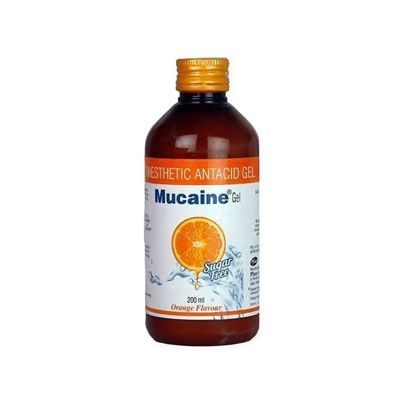

Mucaine 200 ml Süspansiyon

Ne için kullanılır
KT · Bölüm 1• MUCAİNE®200 mL’lik şişelerde, 5 mL’lik ölçeği ile birlikte kullanıma sunulan beyaz renkli, nane koku ve tadında bir süspansiyondur. • MUCAİNE®, etkin madde olarak her bir ölçekte 10 mg okzetazain, 291 mg alüminyum hidroksit, 98 mg magnezyum hidroksit içerir. • MUCAİNE®, mide ve onikiparmak barsağında oluşan ülser (peptik ülser), mide mukozasının iltihabı (gastrit), yemek borusunun iltihabı (peptik ösofajit), mide asidinin aşırı salgılanması (gastrik hiperasidite) ve midenin bir bölümünün diyaframdan göğüs boşluğuna fıtıklaşması (hiyatal herni) gibi tanılara bağlı olarak gelişen mide yanması, mide ekşimesi gibi aşırı asit ve gaz rahatsızlıklarının giderilmesinde kullanılır.